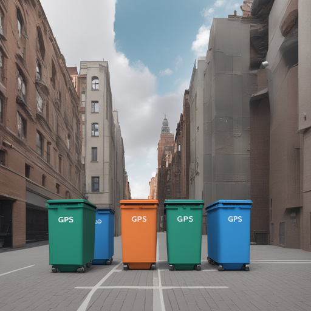
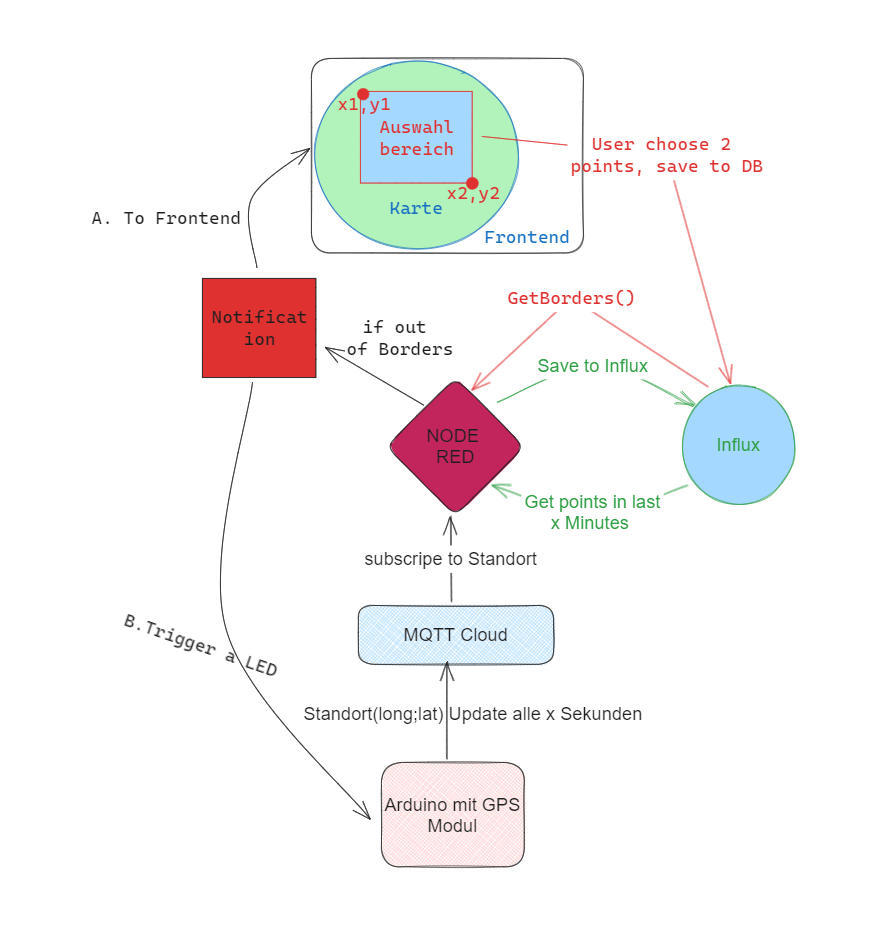

Team Member: Patrick Ries, Attila Kovacs, Stephan Topolanek
Smart City Geofencing für Containerüberwachung
KONTEXT
In einem Smart City Szenario könnte es eine Anwendung sein, Container für Müll oder andere Gegenstände zu überwachen. Ein System, das Benachrichtigungen sendet, wenn Container aus einem bestimmten Bereich verschoben werden, kann dazu beitragen, Diebstahl oder unbefugte Bewegungen zu überwachen und zu verhindern.
USE CASE
In einer Stadt sind Müllcontainer mit einem Arduino und einem GPS-Modul ausgestattet. Diese senden in regelmäßigen Abständen ihre Position an einen zentralen Server. Über eine Webanwendung können Stadtmitarbeiter Geofencing-Bereiche definieren, in denen sich die Container normalerweise befinden (z.B. Werksgelände). Wenn ein Container diesen Bereich verlässt, wird eine Benachrichtigung gesendet, um die zuständigen Behörden oder Mitarbeiter zu informieren.
UMSETZUNG
- Arduino & GPS-Modul:
- Jeder Container wird mit einem Arduino und einem GPS-Modul ausgestattet.
- Der Arduino liest regelmäßig die GPS-Daten aus und sendet diese über LoRa.
- LoRa-Empfänger & MQTT-Broker:
- Ein zentraler LoRa-Empfänger empfängt die GPS-Daten und leitet sie an einen MQTT-Broker weiter.
- Node-RED:
- Node-RED ist mit dem MQTT-Broker verbunden und empfängt die GPS-Daten.
- Es lädt die Geofencing-Bereiche aus dem Backend und prüft, ob die Container sich innerhalb dieser Bereiche befinden.
- Wenn ein Container einen definierten Bereich verlässt, sendet Node-RED eine Benachrichtigung an die zuständigen Mitarbeiter.
- Geofencing:
- Über eine Schnittstelle (Webanwendung/NodeRed/Arduino) können die Mitarbeiter Geofencing-Bereiche auf einer Karte definieren.
- Diese Bereiche werden im Backend gespeichert.
- Backend:
- Speichert die Geofencing-Bereiche und stellt eine API bereit, über die Node-RED auf diese Daten zugreifen kann.

VORTEILE
- Diebstahlschutz:
Frühzeitiges Erkennen von unbefugten Bewegungen von Containern - Effizienzsteigerung:
Schnelle Lokalisation und Rückverfolgung von Containern - Automatisierung:
Automatische Benachrichtigung reduziert manuellen Überwachungsaufwand